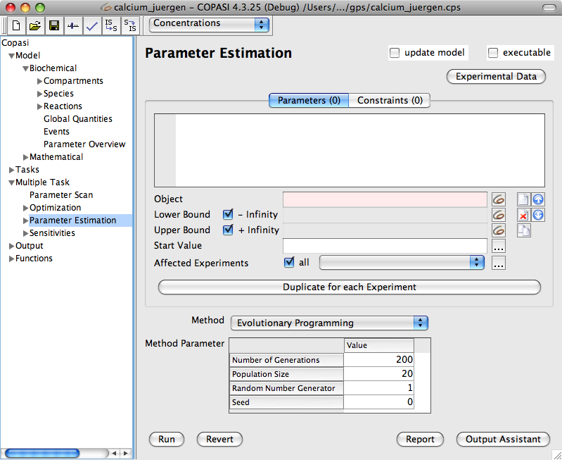

Parameter estimation is the process of trying to calculate model parameters based on a dataset. This dataset can be the result of time course or steady-state experiments or both. COPASI reads a dataset, which may be comprised of several files each including possibly multiple experiments. After the load of the dataset COPASI tries to fit one or more parameters that are specified by the user to that dataset. The methods COPASI uses to estimate good parameter values are the same as in the optimization task. For a description of the different methods, you should read the methods section of this document.
|  |
| Parameter Task Estimation Dialog |
The dialog for the parameter estimation task can be activated by selecting the branch called Parameter Estimation under the Multiple Tasks branch of the tree view on the left side of the user interface. First you can define which parameters COPASI shall try to fit. Each parameter to be fitted can be added like in the Optimization. To do this, click on the button beside the line edit labeled Object, this will open a selection dialog where you can choose the parameter. Additionally you can specify an upper and a lower bound for the parameter. COPASI will only try to fit the parameter within those bounds. Per default, the upper and lower bound are + Infinity and - Infinity respectively. If you want to set your own bounds, disable the check boxes and enter your own value in the edit field. The value for the lower bound goes into the correspondingly labeled edit field, likewise for the upper bound. As a matter of convenience you may enter -X% or +X% as the lower and upper limits. This instructs COPASI to calculate the limits based on the start value. You can also specify other objects from the model as bounds for the parameter. To choose the value of another object as a bound for the parameter, click on the button beside the edit field and choose the object from the tree. The start value is the initial parameter value used by COPASI in any fitting attempt. Per default COPASI selects the current model value of the parameter to be estimated as the starting value. You may manually override this default or use the ... to reset it to model values, randomize it, or set it to the last estimated values. Please note, if the start value of a parameter is outside the boundaries specified, COPASI will force it to the nearest boundary during th parameter estimation. Additionally, you can restrict the effect of a parameter to a subset of the experiments you are attempting to fit. To do this select the ... to the right of Affected Experiments. A possible application is to fit different initial values for each time course experiment. To help you in such a case the Duplicate for each Experiment button will create a copy of the current parameter for each specified experiment.